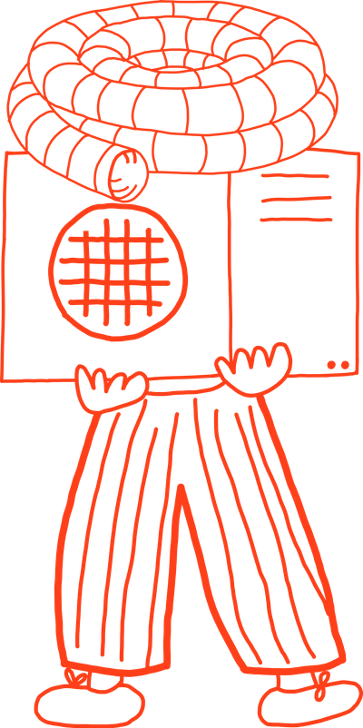

Jsme česká
stavební firma
s vlastní divizí TZB.
Realizujeme generální dodávky veřejných zakázek a zajišťujeme servis VZT.
Na fotce
BohemikNaše zázemí v Dobříši
Realizujeme generální dodávky veřejných zakázek a zajišťujeme servis VZT.


Jsme generální dodavatel veřejných zakázek. Realizujeme stavby, rekonstrukce a přestavby objektů občanské vybavenosti: nemocnic, škol, sportovišť a kulturních institucí.

Generální dodávky staveb, rekonstrukcí a přestaveb.
Reference →
VZT, chlazení, MaR a ZTI.
Reference →
Servis vzduchotechniky na námi realizovaných zakázkách.
Kontakt →Menší tým, pestrá práce na zajímavých stavbách a podpora v dalším růstu.
Pošlete nám odkaz na zadávací dokumentaci nebo popište záměr. Ozveme se co nejdříve.